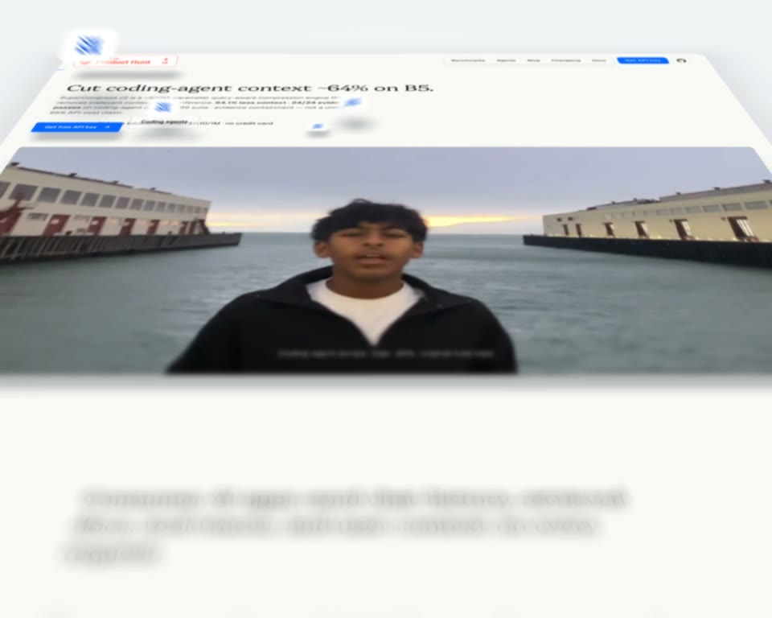
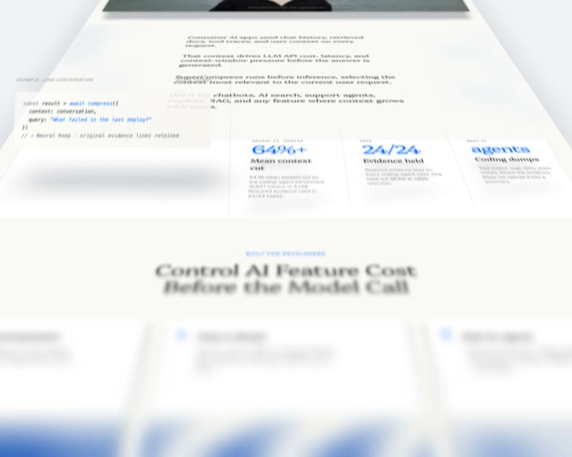
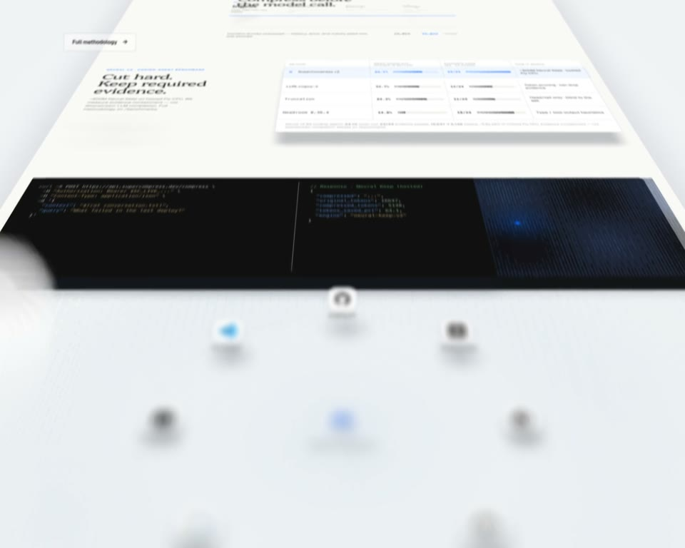
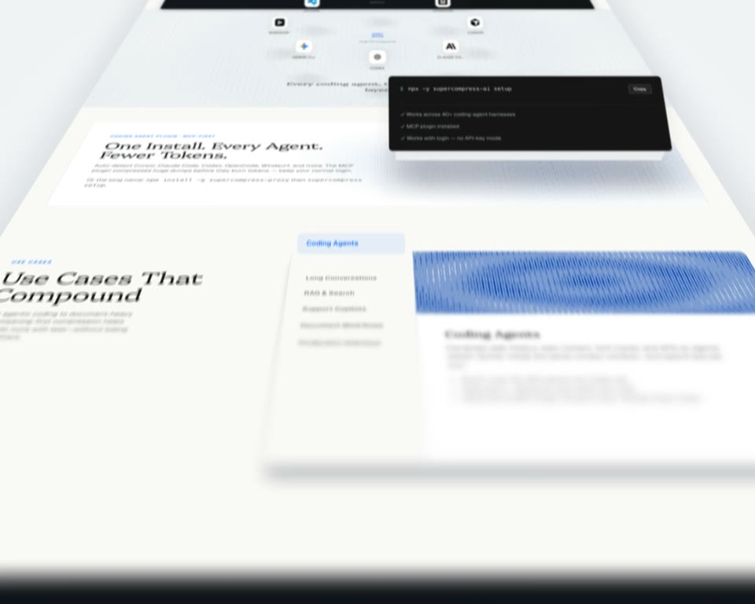
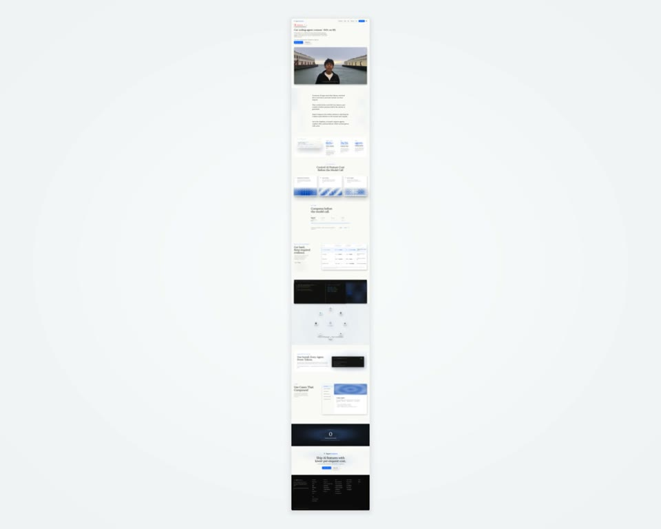
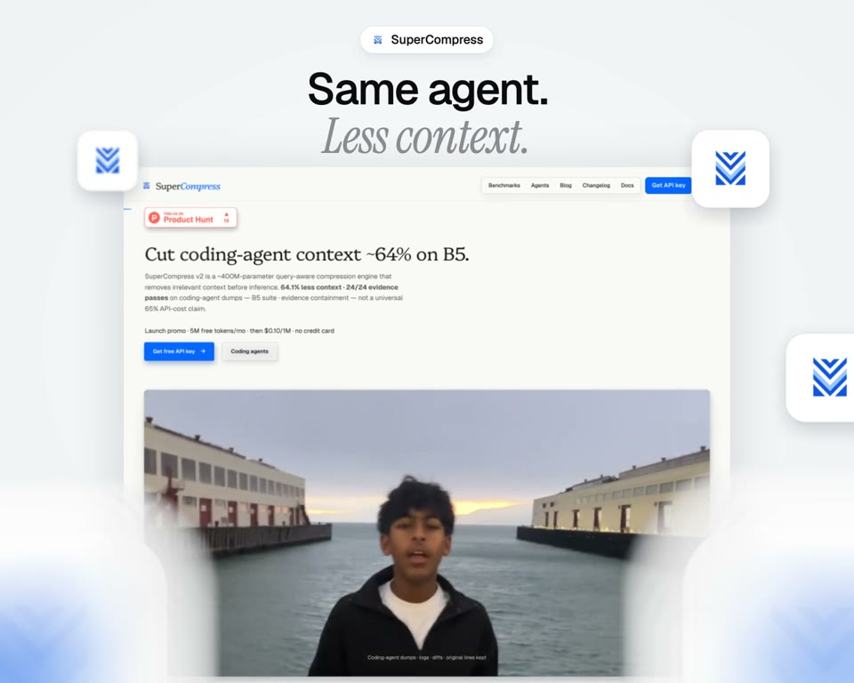

Your landing page, as a film.
An agent skill that captures your site and flies a camera over it: 14.5 seconds, one continuous shot, rendered in WebGL on your own GPU.
Example: supercompress.dev, rendered by the skill, unedited.1440 × 1152 · 60 fps · 16-subframe motion blur · H.264
One camera. No cuts.
The camera glides down your page at one steady speed, rises straight overhead to show it whole, then dives into the hero and lands it under your closing line. The timing is fixed; your page fills it.






Three scripts. Your machine.
Nothing is uploaded and nothing is generated by a video model. Your agent drives a real browser, a WebGL2 page and ffmpeg, and checks its own work before the final render.
- 01
Capture
capture.mjsopens your page at 1440px, 2× scale, scrolls it once so lazy images and counters finish, collapses scroll-pinned sections, then saves the page and every lifting piece on transparency. - 02
Film
film.jslays the page on a studio floor and computes every frame from time alone: one integrated speed curve, per-pixel depth of field, lifted cards with their own shadows. - 03
Render
render.mjsruns it on your GPU at 60fps with 16 motion-blur subframes.flow.pyproves the glide never stalls;score.pylands your track's drop on the title.
Send the link. Answer four questions.
Your agent asks once, then shows you seven stills before it renders anything.
Your landing page
Any public URL. Long pages simply glide faster.
Brand and logo mark
Four logo tiles lift off beside your hero button and follow the film to the end.
A closing line
A short statement, then an italic tail, like the one on this page.
A track, if you like
Optional. The drop is found and lands on 9.97s, as the title appears.
you › Make a landing flyover of https://your.site.
Closing line: "Ship it today." / "Sleep tonight."
Built like a camera. Not a slideshow.
The numbers your agent works to, all of them written into the skill.
- Output
- 1440 × 1152, 60 fps, H.264 MP4, 14.5 s
- Lens
- 1880 px focal length, 56° tilt, 1360 → 1700 px out
- Depth of field
- Per pixel, 40 golden-angle taps from mip levels, capped at 120 px
- Motion blur
- 16 subframes across 0.7 of a frame
- Text
- Mipmaps and 16× anisotropic filtering, so far text never shimmers
- Shadows
- Each piece casts its own: #1a2133, offset with height, 26%
- Checks
- Optical flow on a 30 fps preview: no stalls, no zoom-in
Never in the film: cuts, crossfades, stops or surges in the glide, the camera turning, zooming in during the flight, glows, or text over your page before the end card.